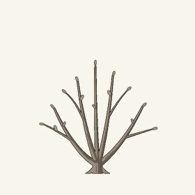
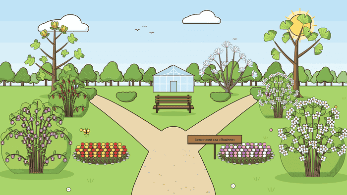

Ласкаво просимо до саду «Поділля»
Затишні стежки, квітучі галявини та дерева з різних куточків світу. Познайомтеся з рослинами трьох розділів саду, дізнайтеся, що цвіте цього місяця, і сплануйте свою прогулянку.
Розпочати прогулянку →
3тематичні розділи
9рослин у путівнику
4континенти походження
12місяців краси
Розділи саду

Квітник
Тюльпани, ромашки та пеларгонії – яскраві барви з весни до осені.

Чагарники
Кольквіція, чубушник і барбарис – живі огорожі та ароматні кущі.

Дендрарій
Гінкго, магнолія Кобуса та ліріодендрон – дерева-довгожителі.
Що цвіте за сезонами
Весна
Тюльпани, магнолія Кобуса, барбарис, кольквіція.
Літо
Чубушник, ромашки, пеларгонії, ліріодендрон.
Осінь
Золоте листя гінкго, червоні ягоди барбарису, останні пеларгонії.
Зима
Графіка гілок, ягоди барбарису під снігом, відшарована кора кольквіції.
Прогулянка садом



Порада: найкращий час для відвідування – кінець квітня,
коли зацвітає магнолія Кобуса, та червень, коли сад наповнює аромат чубушника.